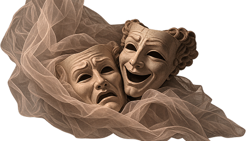
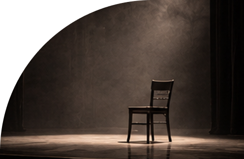
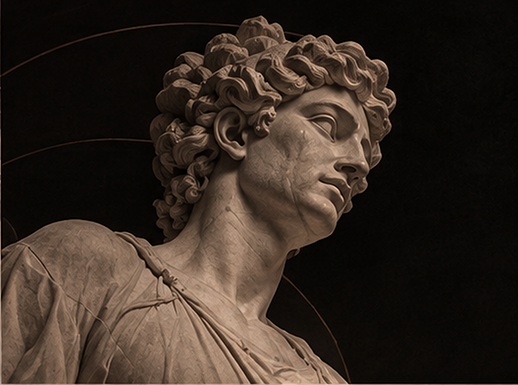
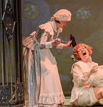
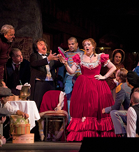
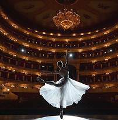
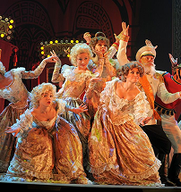

ПЕРВЫЙ
Театр ближе,
чем кажется
О ПРОЕКТЕ
«Первый ряд» — это пространство для тех, кто любит театр, ищет новые впечатления и хочет лучше понимать искусство. Мы рассказываем о театрах, их истории и помогаем с выбором.

ЧТО ТАКОЕ ТЕАТР?
Театр — один из древнейших видов искусства, объединяющий литературу, музыку, танец, живопись, архитектуру и актёрское мастерство. В отличие от кино, театральное представление происходит в реальном времени: актёры и зрители находятся в одном пространстве и вместе проживают историю.
ПОЧЕМУ ТЕАТР ВАЖЕН?
Театр помогает нам лучше понимать себя и окружающий мир. Здесь можно испытать самые разные эмоции, увидеть знакомые ситуации с новой стороны и задуматься о важных вопросах. Каждое представление становится уникальным событием, которое объединяет актёров и зрителей.


ИСТОРИЯ ТЕАТРА
Историю театра принято начинать с Древней Греции, где более двух тысяч лет назад проводились праздники в честь бога Диониса. Во время них люди исполняли песни, танцы и разыгрывали небольшие сценки. Постепенно из этих обрядов сформировалось самостоятельное искусство, появились первые актёры, драматурги и театральные постановки.
ВИДЫ ТЕАТРА
драматический
Здесь главными инструментами становятся актёрская игра, речь, эмоции и взаимодействие персонажей. Драматические спектакли могут рассказывать о любви, семье, обществе, исторических событиях и внутренних переживаниях человека.Подойдёт тем, кто любит истории с глубоким смыслом и психологией.

опера
Опера объединяет театральное действие и академическую музыку. Вместо обычных диалогов герои исполняют вокальные партии в сопровождении оркестра.Даже если ты не знаком с оперой, стоит попробовать хотя бы раз: масштаб декораций, голоса исполнителей и звучание живого оркестра.

балет
В балете история рассказывается через танец, музыку, движения и пластику тела. Это искусство, в котором иногда одно движение способно передать больше, чем целый монолог.Особенно подойдёт тем, кто ценит визуальную красоту и музыку.

мюзикл
Мюзикл сочетает актёрскую игру, вокал и танцы. В нём много музыки, динамики и ярких сценических решений.Хороший вариант для первого знакомства с театром, если хочется чего-то лёгкого, эмоционального и зрелищного.

НЕ ЗНАЕТЕ КУДА ПОЙТИ В
ПЕРВЫЙ РАЗ?
Мы собрали несколько постановок, которые помогут выбрать вечер по настроению. Здесь найдётся всё: от классических историй и большой любви до неожиданных сюжетов и лёгких комедий.
помощь с выбором